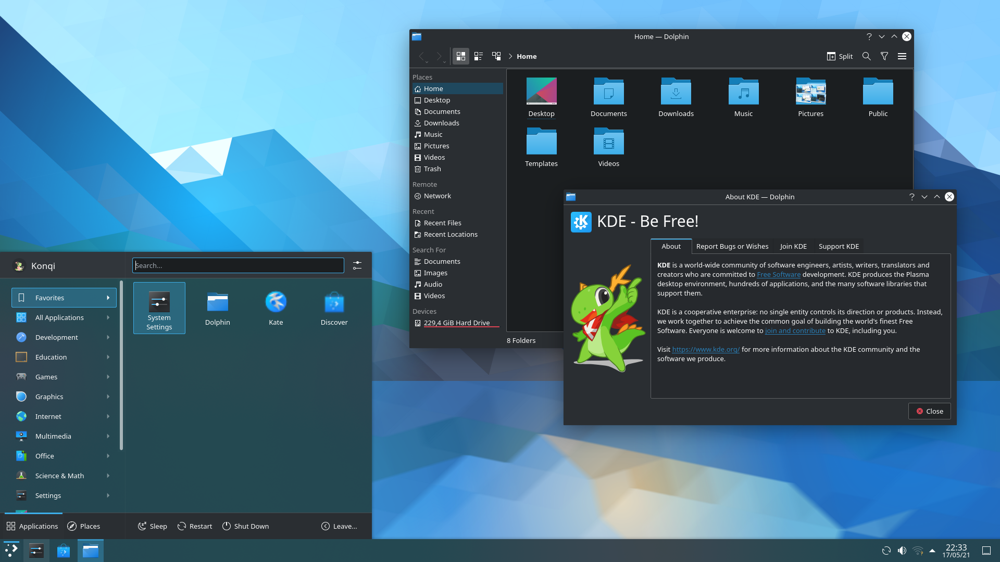
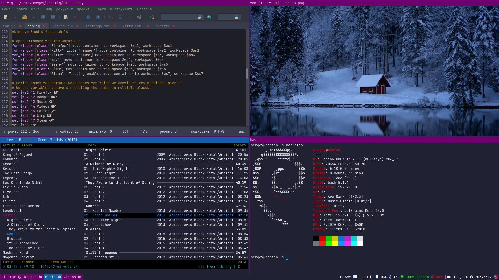

Una distribución de Linux es un sistema operativo basado en el núcleo Linux (kernel) que combina este con aplicaciones, bibliotecas, gestores de paquetes y otros componentes para crear un sistema completo. Las distribuciones de Linux son creadas por comunidades o empresas, adaptando el sistema a diferentes necesidades y preferencias.
Linux es un sistema operativo de código abierto, lo que significa que cualquiera puede:
Ejecutar el sistema.
Estudiar como funciona.
Modificar su codigo
Redistribuirlo, ya sea en su forma original o modificado, e incluso vender copias del código mejorado.
Esto contrasta con los sistemas operativos tradicionales, como Unix, Microsoft Windows o macOS, que son propietarios y no permiten tanta libertad de personalización ni distribución.
¿Qué incluye una distribución de Linux?
Kernel de Linux. El núcleo del sistema operativo. Administra los recursos del hardware (CPU, memoria, discos, etc.) y proporciona una capa de comunicación entre el hardware y el software.
Shell e Intérprete de Comandos. Un programa que permite a los usuarios interactuar con el sistema mediante comandos.
Entorno de Escritorio. Una interfaz gráfica que facilita la interacción con el sistema operativo.
Gestor de Paquetes. Herramienta para instalar, actualizar y eliminar software de manera eficiente desde repositorios seguros.
Sistema de Inicio. Un conjunto de scripts y herramientas que inicializan el sistema operativo.
Aplicaciones de software. Una selección de software preinstalado adaptado al público objetivo de la distribución, que incluye navegadores web, suites ofimáticas, reproductores multimedia y más.
Bibliotecas del sistema. Bibliotecas compartidas que necesitan las aplicaciones para ejecutarse.
Repositorios de Software. Servidores que almacenan aplicaciones y actualizaciones para la distribución.
Documentación. Manuales, guías y recursos en línea para ayudar a los usuarios a navegar y aprovechar al máximo su distribución.
Distibuciones Linux más populares
Ubuntu
Ubuntu es una de las distribuciones de Linux más populares y amigables para los principiantes. Tiene una interfaz gráfica de usuario intuitiva y es fácil de instalar. Además, cuenta con una gran comunidad de usuarios y una gran cantidad de documentación en línea. También ofrece una gran cantidad de software disponible en su tienda de aplicaciones, lo que lo hace una excelente opción para computadoras personales.
Una de las características destacadas de Ubuntu es su tienda de aplicaciones, que incluye una amplia gama de software disponible para instalación con solo unos clics. Además, Ubuntu tiene versiones LTS (Long Term Support) que proporcionan actualizaciones de seguridad durante 5 años, lo que la convierte en una opción confiable tanto para usuarios domésticos como para empresas.
Linux Mint
Linux Mint es una distribución basada en Ubuntu que se orienta a usuarios que buscan una alternativa a Windows. Esta distro ofrece un entorno de escritorio intuitivo y altamente personalizable que es similar al entorno de Windows, lo que facilita la transición para nuevos usuarios de Linux. El objetivo de Linux Mint es ofrecer un sistema "listo para usar" con una experiencia de usuario sencilla, estable y eficiente.
Debian
Debian es una de las distribuciones más antiguas y respetadas de Linux. Es conocida por su estabilidad, seguridad y gran soporte de software. Debian se utiliza como base para muchas otras distribuciones populares, incluida Ubuntu. A diferencia de Ubuntu, Debian pone énfasis en la estabilidad a largo plazo, lo que la convierte en una excelente opción para servidores y sistemas que requieren alta fiabilidad.
Fedora
Fedora es una distribución patrocinada por Red Hat que se destaca por ser una de las más avanzadas en términos de software y tecnologías. Es conocida por ofrecer lo último en software libre y de código abierto, lo que la convierte en una excelente opción para desarrolladores y entusiastas que desean tener las versiones más recientes de herramientas y aplicaciones. Fedora sigue un ciclo de lanzamiento rápido, con nuevas versiones cada seis meses, lo que significa que siempre tiene las últimas características y actualizaciones. Sin embargo, este enfoque también significa que Fedora puede ser menos estable que distribuciones más conservadoras como Debian o Ubuntu, lo que puede ser un factor a considerar dependiendo de tus necesidades.
Arch Linux
Arch Linux es una distribución que sigue la filosofía de "KISS" (Keep It Simple, Stupid), lo que significa que ofrece un sistema base muy simple sobre el que el usuario puede construir lo que necesite. Arch es conocido por su enfoque minimalista y por ofrecer un sistema completamente personalizable. En lugar de proporcionar un sistema "listo para usar", Arch ofrece a los usuarios un lienzo en blanco para que configuren y personalicen su sistema desde cero. Arch utiliza un modelo de lanzamiento continuo, lo que significa que siempre se tiene acceso a las últimas versiones de software sin necesidad de esperar por grandes actualizaciones. Esta característica es ideal para usuarios avanzados que desean estar a la vanguardia de las tecnologías de software.
Entorno de escritorio
Al elegir una distribución de Linux, también estarás eligiendo un entorno de escritorio por defecto. Cada distribución tiene su propio enfoque en cuanto al entorno gráfico que ofrece, y esto es algo que deberás considerar dependiendo de tus preferencias de uso.
Gnome
GNOME es uno de los entornos de escritorio más populares en Linux. Está diseñado para ser sencillo y fácil de usar, con un enfoque minimalista y moderno. GNOME proporciona una experiencia limpia, con una interfaz de usuario que pone énfasis en la simplicidad y la productividad
Distribuciones que usan GNOME por defecto: Fedora, Ubuntu (aunque en Ubuntu se personaliza un poco), Debian.
KDE Plasma
KDE Plasma es otro de los entornos de escritorio más populares, conocido por su apariencia visualmente atractiva y altamente personalizable. Plasma ofrece una gran cantidad de características y herramientas para personalizar cada aspecto de tu escritorio. Algunas características clave de KDE

Gestores de ventanas Tiling
Los gestores de ventanas tiling (mosaico) son un tipo de entorno que organiza las ventanas de manera eficiente sin necesidad de usar el ratón. En lugar de colocar las ventanas en el escritorio como si fueran bloques flotantes, los gestores tiling las organizan automáticamente en mosaico para aprovechar al máximo el espacio disponible. Son populares entre usuarios avanzados que prefieren usar el teclado en lugar del ratón para manejar las ventanas.
Por ejemplo:
i3
hyprland
sway

En general, cada distribución de Linux viene con un entorno de escritorio por defecto, pero la belleza de Linux es que puedes elegir entre diferentes opciones. Algunas distribuciones incluyen varios "sabores" que vienen con distintos entornos de escritorio preconfigurados, permitiendo que el usuario elija el que más le guste.